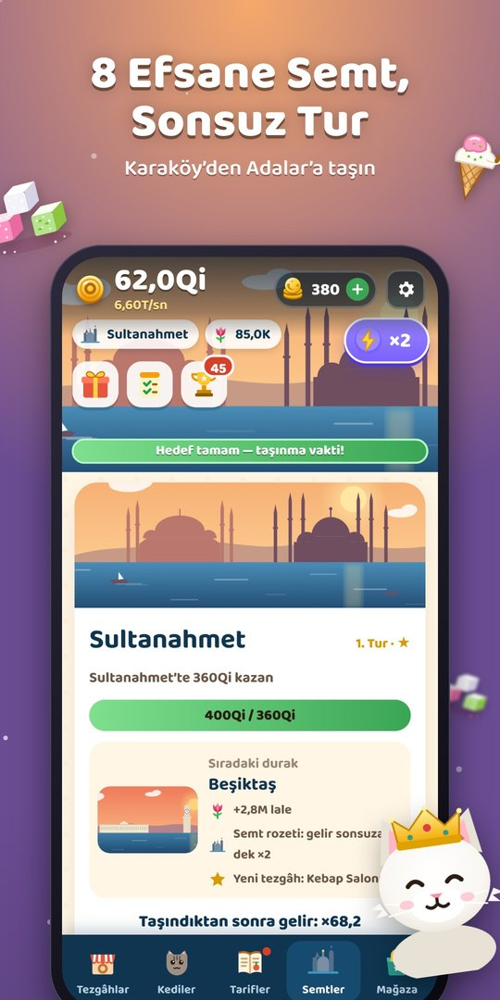
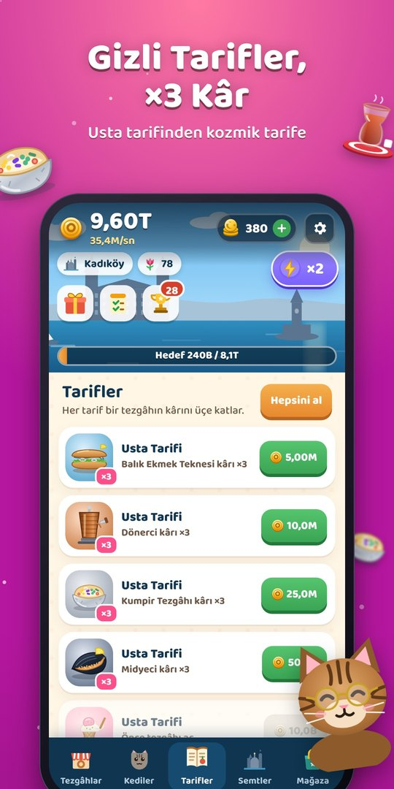
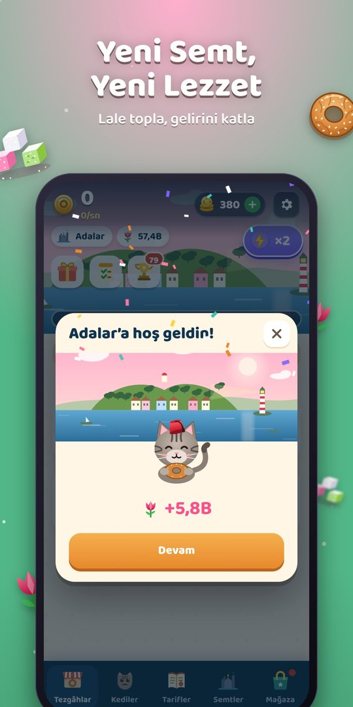
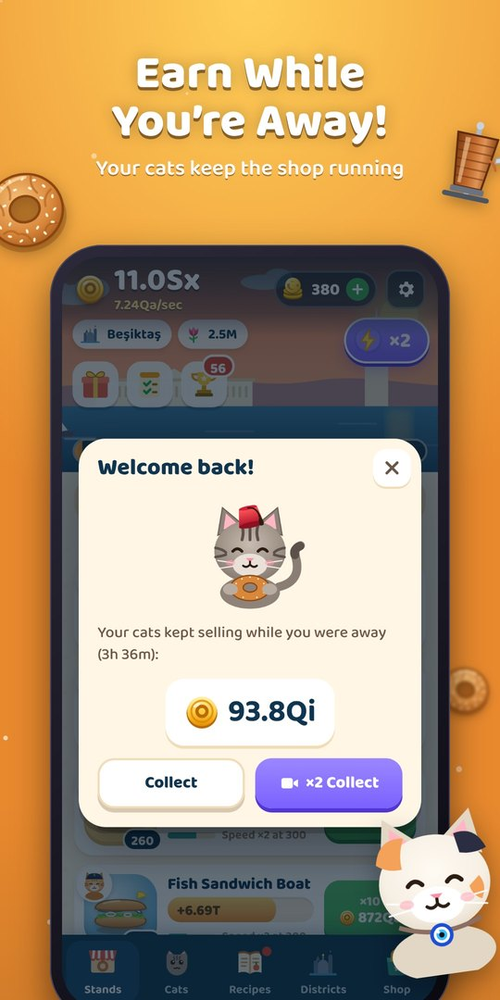
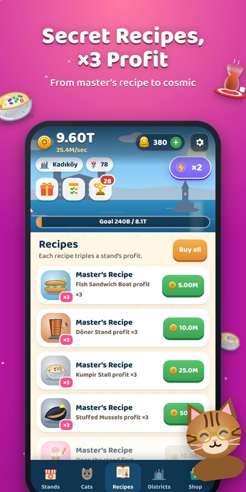
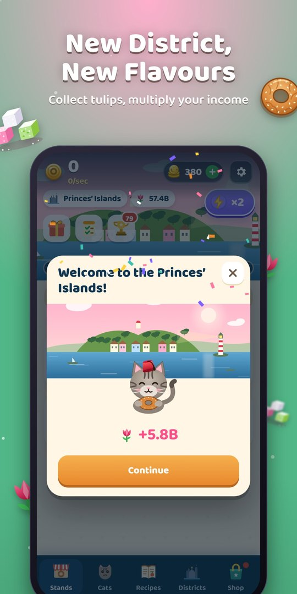

10 sokak lezzeti10 street foods
Simit, çay, poğaça, balık ekmek, döner, kumpir, midye, Maraş dondurması, lokum ve kebap.Simit, Turkish tea, poğaça, fish sandwiches, döner, kumpir, stuffed mussels, Maraş ice cream, Turkish delight and kebab.
Tek bir simit arabasından İstanbul’un en lezzetli imparatorluğuna. Kedi müdürlerini işe al, martıları yakala, vapuru karşıla.From one simit cart to Istanbul’s tastiest food empire. Hire cat managers, catch seagulls, meet the ferry.


Ekran görüntüleriScreenshots










Simit, çay, poğaça, balık ekmek, döner, kumpir, midye, Maraş dondurması, lokum ve kebap.Simit, Turkish tea, poğaça, fish sandwiches, döner, kumpir, stuffed mussels, Maraş ice cream, Turkish delight and kebab.
Pamuk, nazar boncuklu Boncuk, fesli Paşa, Van kedisi Sultan… Tezgâhlarını sen yokken bile çalıştırırlar.Pamuk, Boncuk with her evil-eye bead, Paşa in his fez, Sultan the Van cat… They run your stands even while you are away.
Karaköy’den Adalar’a; her semtin kendi silüeti ve günün kendi saati. Taşın, lale ve semt rozeti kazan.From Karaköy to the Princes’ Islands, each with its own skyline and time of day. Move on to earn tulips and district badges.
Simit kapan martıyı yakala, vapur yanaşınca izdiham saatinde gelirini üçe katla.Catch the simit-stealing seagull and triple your income at rush hour when the ferry docks.
Usta tarifinden kozmik tarife 275 tarif ve mahalle şenlikleri.275 recipes from the master’s recipe to the cosmic one, plus neighbourhood festivals.
Kedilerin çalışır, döndüğünde kasan dolu. İnternetsiz oynanır, hesap gerekmez.Your cats keep working and your till is full when you return. Plays offline, no account needed.
Sık sorulanlarFAQ
Gizlilik Politikası · Privacy Policy · Kullanım Koşulları · Terms of Use